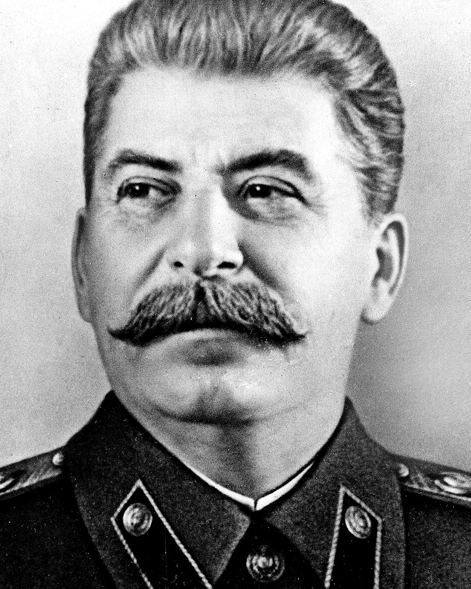
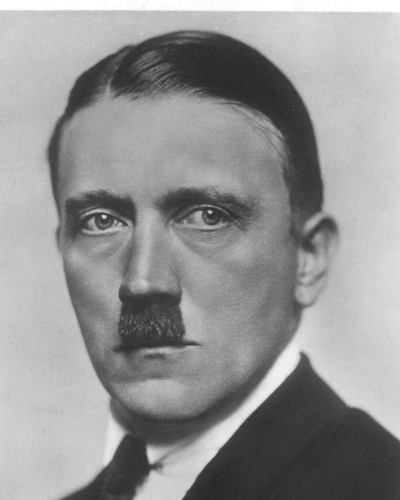

THE THREE FACES OF TONY LOFF
CO-COMMISSIONER FOR LIFE · DEPARTMENT OF DOING WHAT I SAY

JOSEF LOFFALIN
HOARDER OF CONTRACT YEARS

ADOLF LOFFLER
VETOER OF THE PEOPLE'S TRADE
TONY JONG UN
KEEPER OF THE SPREADSHEET